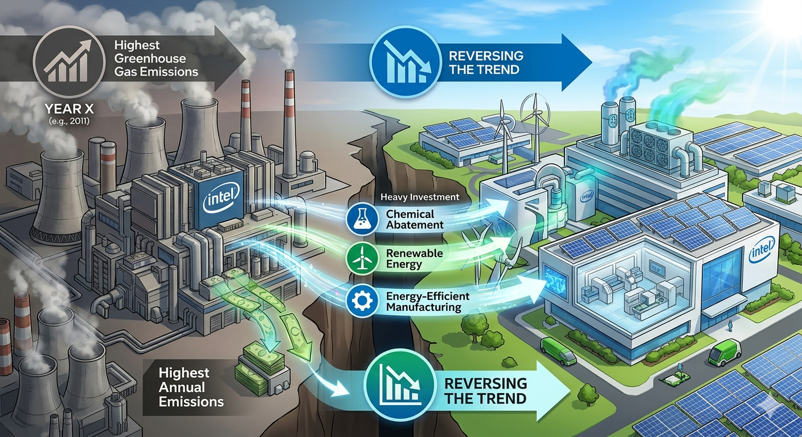
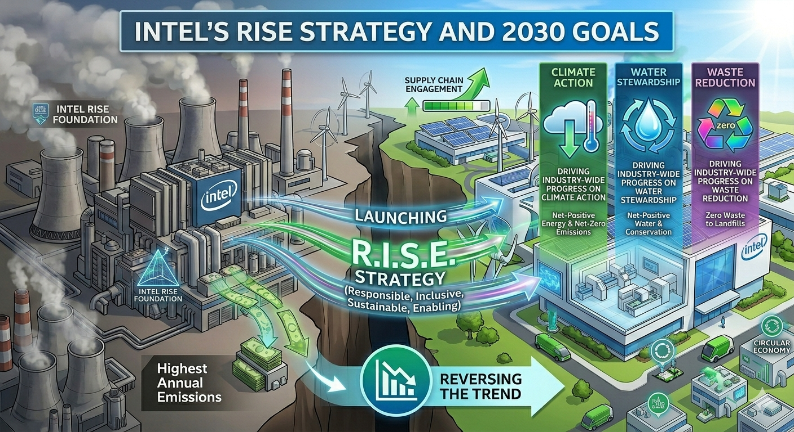
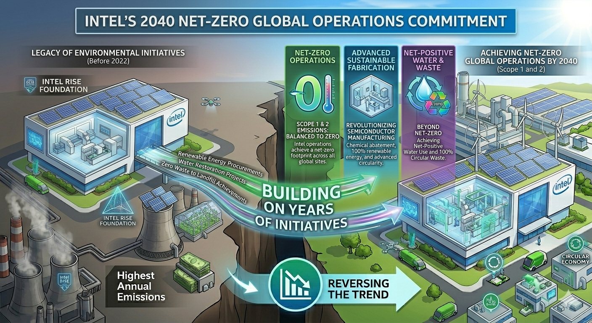
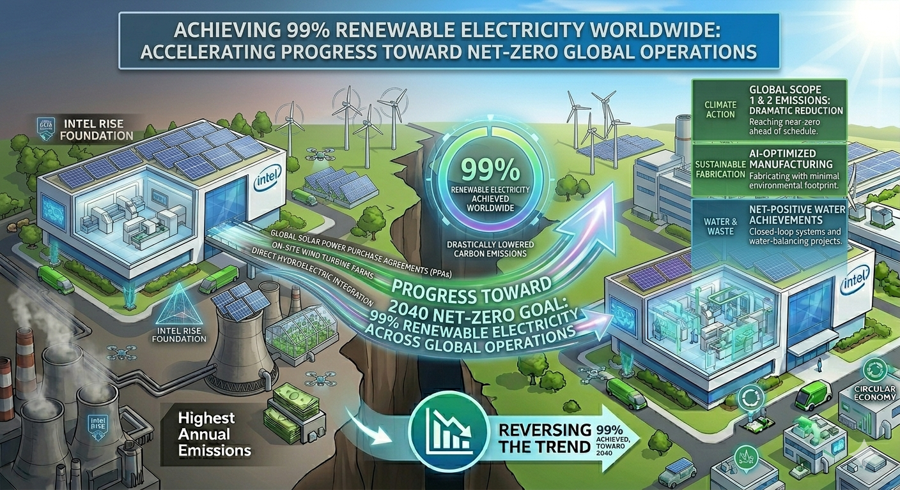
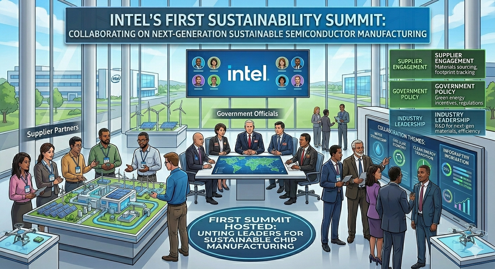

Sustainability Through the Ages
Explore Intel's journey through time, discovering how our commitment to innovation has shaped a more sustainable future for technology and our planet.
Explore Intel's journey through time, discovering how our commitment to innovation has shaped a more sustainable future for technology and our planet.
Scroll to view timeline — Hover over cards to learn more!







Under its RISE (Responsible, Inclusive, Sustainable, Enabling) strategy, Intel sets ambitious 2030 goals, including driving industry-wide progress on climate action, water stewardship, and waste reduction.
Learn MoreIn 2022, Intel pledged to achieve net-zero greenhouse gas emissions (Scope 1 and 2) by 2040. This commitment builds on decades of environmental initiatives and partnerships across the semiconductor industry.
Learn MoreIntel conserves billions of gallons of water annually and collaborates with local communities to restore watersheds. Intel also upcycles and recycles materials to reduce waste and advance a circular economy.
Learn MoreSubscribe to our newsletter below.